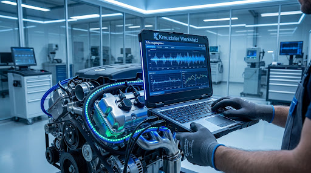

Mit moderner Diagnosetechnik prüfen wir elektronische und mechanische Fahrzeugsysteme und grenzen Fehler systematisch ein.

ECHTZEIT-ANALYSE
100% Präzision
Computergestützte Fahrzeugdiagnose mit moderner Prüf- und Auslesetechnik. Wir lesen Fehlerspeicher aus, prüfen relevante Messwerte und grenzen Störungen systematisch ein.
Wir nutzen stets die aktuellste Hard- und Software für alle gängigen Fahrzeugmarken, um exakte Ergebnisse zu garantieren.
Versteckte Fehlercodes werden präzise ausgelesen, interpretiert und gelöscht, um Folgekosten zu vermeiden.
Überprüfung von Live-Parametern während des Betriebs zur Diagnose komplexer, sporadisch auftretender Fehler.
Vom Motorsteuergerät bis zum Assistenzsystem – alle Steuergeräte auf einen Blick
Von der Lambdasonde über den Katalysator bis zum Dieselpartikelfilter – wir analysieren die gesamte Antriebsstrang-Elektronik. Typische Fehler: Gemischbildung, Zündaussetzer, Ladedruckprobleme, AGR-Ventil, Partikelfilter-Regeneration.
Elektronische Fahrwerke, adaptive Dämpfer, Lenkwinkelsensor, ESP-Systeme – moderne Fahrwerke sind vernetzte Systeme. Wir lesen Sensorwerte aus, prüfen Stellglieder und kalibrieren Systeme nach Reparaturen.
Standheizung, Sitzheizung, Zentralverriegelung, Fensterheber, Schiebedach – viele Komfortfunktionen werden über Steuergeräte gesteuert. Wir diagnostizieren und beheben Fehler an der gesamten Karosserieelektronik.
ACC, Spurhalteassistent, Notbremsassistent, Parkpiepser, Kamerasysteme – Fahrerassistenzsysteme sind komplex und erfordern spezielle Diagnose. Wir prüfen Sensoren, Kalibrierung und Systemkommunikation.
Wir schließen unsere herstellerspezifische Diagnose an Ihr Fahrzeug an und lesen alle Steuergeräte aus. Fehlercodes werden dokumentiert und analysiert.
Ein Fehlercode allein sagt nicht immer, wo der Fehler liegt. Wir führen gezielte Tests durch, messen Sensoren und Aktoren und grenzen die Ursache Schritt für Schritt ein.
Nach der Fehlerbehebung wird der Fehlerspeicher gelöscht und eine erneute Systemprüfung durchgeführt. Erst wenn keine Fehler mehr auftreten, ist die Diagnose abgeschlossen.
Antworten zur Fahrzeugdiagnose
Ignorieren Sie keine Warnleuchten. Eine frühzeitige Diagnose spart Zeit und bewahrt Sie vor teuren Folgeschäden. Vertrauen Sie auf unsere Expertise.